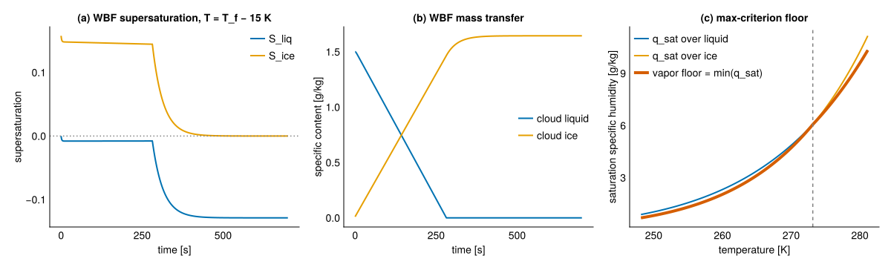

Rosenbrock-average microphysics substepping
The RosenbrockAverage tendency mode returns time-averaged microphysics tendencies over a time step Δt by taking nsub linearized-implicit (Rosenbrock-Euler) substeps. Each substep solves
\[\left(\frac{I}{h} - J\right)\, \Delta = f(x), \qquad x \leftarrow \max(x + \Delta,\, 0), \qquad h = \Delta t / n_\mathrm{sub},\]
where f is the raw pointwise tendency, x the species state, and J a matrix that approximates the tendency Jacobian. The averaged tendency returned is (x_final - x_initial) / Δt. Temperature is advanced between substeps from the latent heat of the realized increment.
Options
RosenbrockAverage is parameterized by three independent option families:
Jacobian— the matrixJused in the substep solve.DonorJacobian— the donor-based linearizationM: each transfer is linearized in its donor species, vapor sources enter as a constant, and rates are floored bymax(q_min, q_donor). This is the matrix the operationalLinearizedAveragemode uses.CoupledDonorJacobian— the donor-based matrix with the vapor-competition (Wegener–Bergeron–Findeisen) coupling added. The donor-based linearization keeps only donor-species slopes; restoring the dependence of each rate on the shared vapor specific content recovers the cross-species coupling and corrects the sign of the snow-from-cloud-liquid entry. The direct condensate dependence of the rates (rain ventilation, the availability terms) is not recovered; useExactJacobianfor the full derivative.ExactJacobian— the exact tendency derivative, formed withForwardDiff.
GrowthTreatment— how the positive (growth) diagonal ofJenters the implicit operator.ImplicitGrowth— leaveJunchanged.ExplicitGrowthDiagonal— zero the positive diagonal entries ofJ, so a growth mode is taken explicitly and only the decay diagonal remains in the implicit operator.
TendencyLimiter— a limiter applied to the realized substep increment.NoLimiter.EndStateSaturationAdjustment— scale the increment so the latent-heated end state does not cross saturation over its more-supersaturated phase,max(S_ice, S_liq)(see below).
Three preset configurations are supported:
| preset | Jacobian | growth | limiter |
|---|---|---|---|
rosenbrock_donor() | DonorJacobian | ImplicitGrowth | NoLimiter |
rosenbrock_coupled() | CoupledDonorJacobian | ImplicitGrowth | NoLimiter |
rosenbrock_exact() | ExactJacobian | ExplicitGrowthDiagonal | EndStateSaturationAdjustment |
rosenbrock_donor() reproduces LinearizedAverage (the operational donor-based scheme), now expressed within the unified framework; in Float64 the two agree to round-off. On the two-moment + P3 model only ExactJacobian is available (there is no donor-based matrix there); use rosenbrock_exact().
The Verbose(mode) wrapper additionally returns the per-process tendencies realized by the implicit solve, attributed through the same substep factorization so that they sum to the net of the unlimited solve.
Extending the framework
To add a new Jacobian, define struct MyJacobian <: Jacobian end and the methods _jacobian_provider(::MyJacobian) (returning a (g, x) -> J provider) and _species_mask(::MyJacobian, ::GrowthTreatment). A new growth treatment is a GrowthTreatment subtype plus an _apply_growth(::MyGrowth, J) method; a new limiter is a TendencyLimiter subtype plus an _apply_limiter(::MyLimiter, x, Δ, ...) method. The substep driver dispatches on the option types at compile time, so a configured mode resolves with no run-time branch.
The coarse-step ice-growth instability
At a cold, ice-supersaturated state carrying supercooled cloud liquid, the ice-growth tendency has an autocatalytic mode: rime mass grows by collecting cloud droplets, and denser rimed particles fall faster and sweep out more liquid, so the rime-mass tendency increases with rime mass. The exact Jacobian carries this as a positive diagonal in the rime-mass (q_rim) row. At a representative state — ρ = 1.0 kg m⁻³, T = 263 K, q_tot = 10⁻², q_lcl = 2 × 10⁻³, n_lcl = 10⁸ m⁻³, q_ice = 2 × 10⁻³, n_ice = 10⁴ m⁻³, unrimed, ice supersaturation S_ice ≈ 1.8 — the diagonal is +5 × 10⁻² s⁻¹ (time scale ≈ 20 s, identical in Float32 and Float64), and it grows past 10⁻¹ s⁻¹ at colder, more liquid-rich states. The mode requires supercooled liquid: with the same ice state but no cloud liquid the rime-mass diagonal falls to order 10⁻⁵ s⁻¹, and the pure-deposition diagonal is negative there (vapor depletion opposes further deposition). With the exact Jacobian and ImplicitGrowth, the implicit operator I/h − J loses positive-definiteness once the growth eigenvalue exceeds 1/h, i.e. once the substep is coarse relative to the growth time scale. The single substep then overshoots the nonlinear limit the linear operator does not see: ice is over-grown past the available condensate, the latent heating drives a spurious temperature excursion, and the state goes non-physical. This crash is a property of the single-column convective configuration, not of an isolated cell; the growth diagonal above is an isolated-cell measurement, but the crash itself appears only in the coupled single-column run.
What resolves it
The exact preset removes the growth mode from the implicit operator and bounds the now-explicit growth by the physical saturation limit:
ExplicitGrowthDiagonalzeros the positive diagonal, so the implicit operator carries only non-positive modes and is well-conditioned at any substep size. The exact off-diagonal couplings (which the donor-based matrix drops) are retained, so accuracy at cold, supersaturated cells is better than the donor scheme.EndStateSaturationAdjustmentscales the substep increment by the largests ∈ [0, 1]for which the latent-heated end state stays at or above saturation over its more-supersaturated phase (max(S_ice, S_liq); see the next section). It acts only on cells that begin at or above saturation (a subsaturated, evaporating or sublimating cell cannot over-deposit, so its increment is returned unchanged). It is a no-op at fine substeps and engages only when the full step would cross saturation. The bisection count is set from the float precision.
Both pieces are required: zeroing the growth diagonal alone leaves the explicit growth unbounded at the coarsest single-substep steps, and the saturation adjustment supplies the missing nonlinear bound. Together they make the exact scheme robust across the resolved time-step envelope.
At a single substep the explicit growth is bounded only by the saturation adjustment, which over-produces precipitation at coarse time steps. Two or more substeps recover accurate precipitation; the saturation adjustment is then rarely active.
The mixed-phase saturation criterion
A cell has two saturation thresholds, over liquid and over ice, and the condensation and deposition processes draw on a single shared vapor reservoir. EndStateSaturationAdjustment limits the increment on the more-supersaturated phase, max(S_ice, S_liq): it keeps the latent-heated end state at or above the saturation of whichever phase carries the larger supersaturation. Equivalently the vapor floor is the lower of the two saturation specific humidities, since the smaller q_sat is the larger supersaturation.
The two saturation curves cross at the freezing point (panel (c) below). Below freezing q_sat_ice < q_sat_liq, so ice carries the larger supersaturation and the criterion binds on ice — reducing exactly to the ice-saturation limit that bounds the ice-growth instability, so the cold behaviour is unchanged. Above freezing the curves swap and the criterion binds on liquid; an ice-only limit there would stop vapor depletion early and leave the cell supersaturated over liquid, suppressing warm cloud, which binding on the more-supersaturated phase avoids.
A single 0-D parcel that exchanges vapor with cloud liquid and cloud ice only (no collection or precipitation) isolates the mixed-phase physics behind the two thresholds. Cloud liquid is kinetically fast and cloud ice slow, so while liquid is present it pins the vapor near water saturation (panel (a), S_liq ≈ 0); the parcel stays supersaturated over ice (S_ice > 0) and ice deposits, drawing mass from the evaporating liquid (panel (b)) — the Wegener–Bergeron–Findeisen transfer. Only once the liquid is exhausted does the vapor relax to ice saturation (S_ice → 0). The drawdown from water saturation to ice saturation is therefore inherently a multi-step process at the resolved time step.
include("plots/SatAdjustmentWBF_plots.jl")CairoMakie.Screen{SVG}

Binding on max(S_ice, S_liq) is a single shared scalar on the whole increment, which is what keeps the limiter stable: scaling processes independently breaks the coupling between paired transfers and the shared vapor draw. The criterion binds the correct phase wherever a single phase grows from vapor — ice only (the cold deposition cells, where it reduces to the ice limit) or liquid only (warm cells). When both phases are supersaturated below freezing, a vigorous mixed-phase updraft core, the criterion binds on the ice floor (the more-supersaturated phase there) and so condenses the co-present, still-growing liquid past its own saturation in a single step rather than transferring it gradually. A fully per-phase floor — binding on the first growing phase to saturate and letting the slower phase relax over subsequent steps — would represent the gradual transfer more faithfully and is a candidate refinement. The distinction is inactive at fine substeps, where the limiter rarely engages, and does not affect the cold instability resolution, which is set by the ice floor.
Approaches that did not resolve the instability
These were tried and are not part of the supported framework.
- Field-of-values growth clamp (a uniform diagonal shift bringing the operator's rightmost eigenvalue to
α/h). It stabilizes the linear operator but does not bound the single-step explicit overshoot of the nonlinear source as it approaches saturation: the crash is a saturation overshoot, not an operator amplification, so the shift only delays it. Withαnear one the near-singular resolvent it leaves amplifies the growth into a larger overshoot. - Diagonal growth clamp (limit each positive diagonal to
α/h). It shares the same limitation, and limiting a positive diagonal balanced by off-diagonal structure can itself destabilize an otherwise-stable step. - Smooth species mask (a differentiable replacement for the near-empty species mask). At coarse single substeps it routes activating ice and liquid species to a forward-Euler step, which itself overshoots the fast growth.
- Implicit temperature (promoting
Tinto the implicitly solved state). It removes the error of the operator-split between-substep temperature update, but the dominant brake on the growth — the nonlinear condensate depletion — is not linear, so a linear implicit temperature feedback does not bound the growth overshoot at fixed coarse substeps.